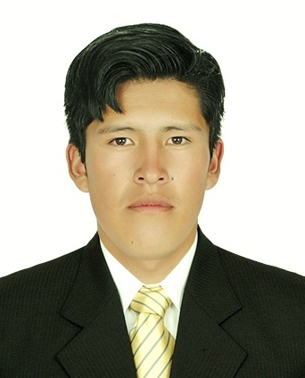

Nombre: Alfredo Turpo Pachari
Biografia:
Ing.alfredo Turpo Pachari estudio enla la ciudad de San Roman Julica-Puno-Peru,ingreso en 2012 ala universidad tecnologica del peru UTP ala carrera profecioal de Ingenieria de Sistemas en la region de puno, tambien en el 2013 ingresa ala universidad nacioal del altiplano puno UNAP ala carrera profesional de Ingenieria Electronica en el 2015 ingresa nuevamente ala UNAP ala carrera profesional de ingenieria Mecanica Electrica